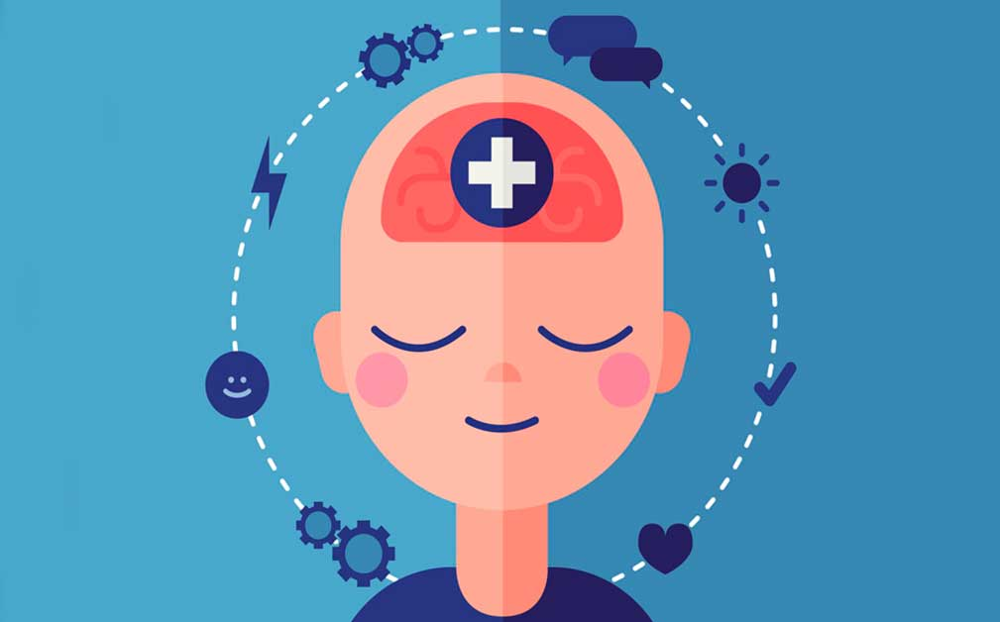
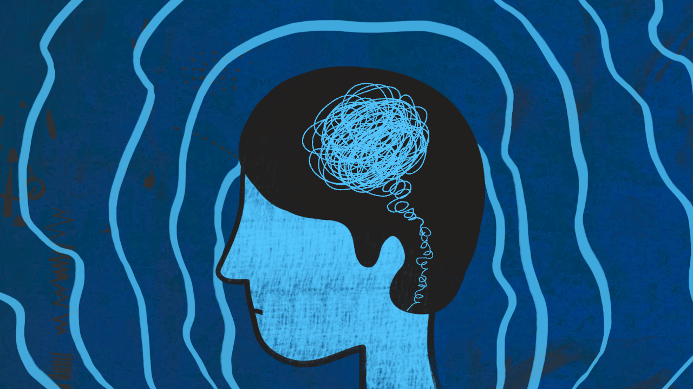
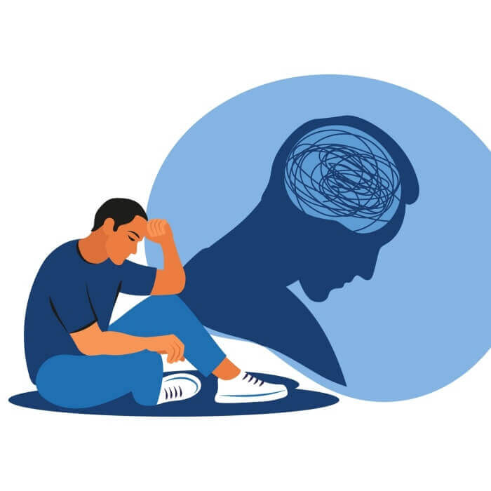
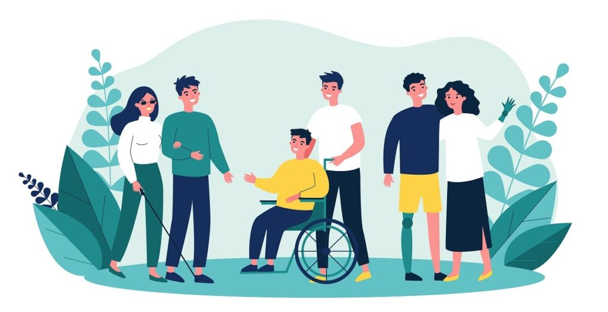
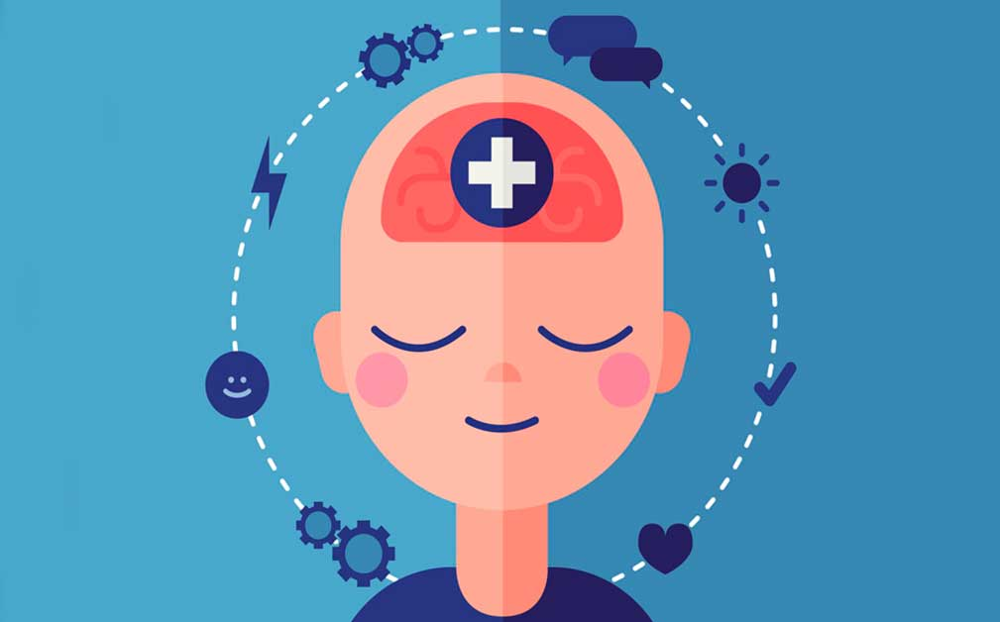
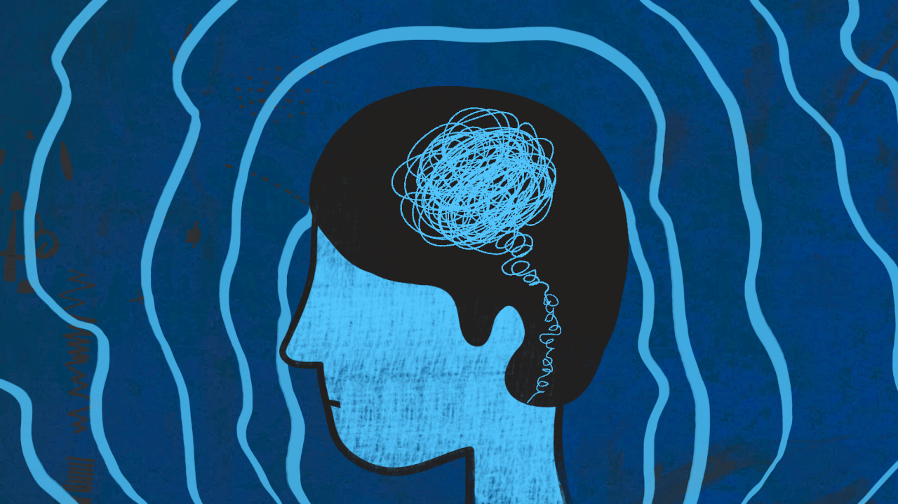
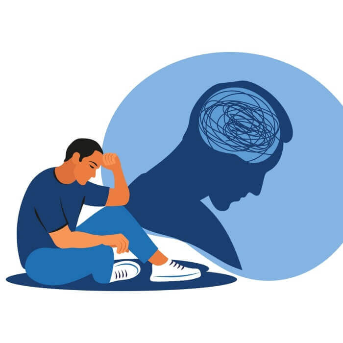
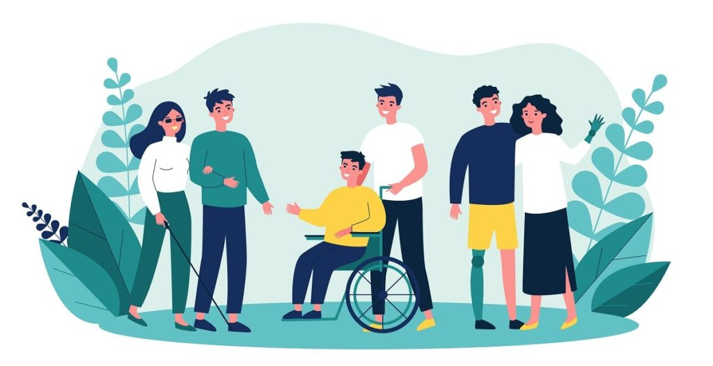

Introducción
En un mundo donde la atención se centra en la salud general, la salud mental se está convirtiendo en una parte importante de nuestra calidad de vida. La salud mental involucra muchas emociones, pensamientos y relaciones que afectan cómo pensamos, sentimos y nos comportamos en nuestra vida diaria. Desde el manejo del estrés diario hasta tratamientos más complejos, la salud mental impacta directamente nuestra capacidad para enfrentar desafíos, relacionarnos con los demás y alcanzar nuestro máximo potencial. En esta guía, examinaremos la importancia de la salud mental, los factores que afectan la salud mental y las estrategias para apoyar el pensamiento y los sentimientos en su vida.
Posibles Soluciones
· Terapia Cognitivo-Conductual
La terapia cognitivo-conductual es un enfoque terapéutico que se centra en identificar y cambiar pensamientos negativos o negativos y conductas problemáticas. Se basa en la idea de que nuestro conocimiento (pensamiento) afecta nuestro pensamiento y comportamiento. En terapia intentamos cambiar creencias negativas o inútiles y desarrollar habilidades para afrontar situaciones difíciles. La TCC es eficaz en el tratamiento de muchas afecciones de salud mental, como la depresión, la ansiedad, los trastornos alimentarios y el trastorno obsesivo-compulsivo.
· Medicación (bajo supervisión médica)
El manejo de medicamentos implica el uso de medicamentos psicotrópicos para tratar los trastornos mentales. Estos medicamentos pueden incluir medicamentos contra la ansiedad, medicamentos contra la ansiedad, medicamentos contra la ansiedad, medicamentos contra la ansiedad y más. La decisión de prescribir y elegir el tipo de medicamento depende de muchos factores, incluido el diagnóstico específico, la gravedad del dolor, la respuesta a tratamientos anteriores y las condiciones existentes. Es importante que los medicamentos sean recetados y supervisados por un médico calificado (como un psiquiatra) para garantizar su eficacia y seguridad.
· Ejercicio Regular
El ejercicio regular se refiere a la actividad física que favorece la salud y el bienestar. El ejercicio regular no sólo es bueno para el cuerpo, sino que también tiene un efecto positivo en el cerebro. Se ha demostrado que la actividad física regular reduce el estrés, mejora el estado de ánimo, aumenta la confianza en uno mismo, promueve un mejor sueño y reduce el riesgo de trastornos mentales como la depresión y la ansiedad. Se recomiendan al menos 150 minutos de ejercicio moderado por semana, pero cualquier actividad física puede resultar beneficiosa.
· Apoyo Social
El apoyo social se refiere al apoyo emocional, social y de apoyo que recibimos de las relaciones con nuestra familia, amigos, compañeros de trabajo y otras personas en nuestras relaciones. El apoyo social se puede utilizar de muchas maneras, incluido el apoyo emocional (comprensión, sentimientos), el apoyo (consejos, recursos) y el apoyo material (instrucciones, información). Tener un sistema de apoyo sólido se asocia con una mejor salud y bienestar emocional porque brinda apoyo para afrontar el estrés, superar desafíos y mantener relaciones y relaciones.